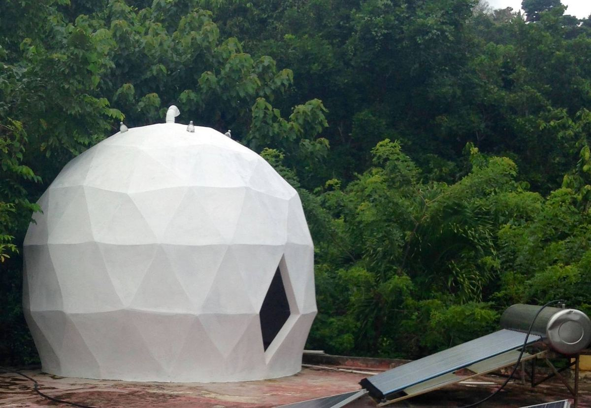
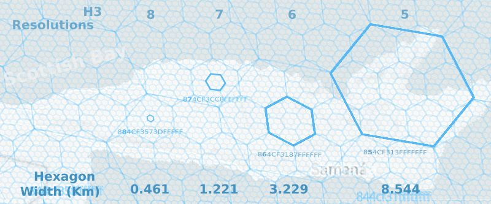
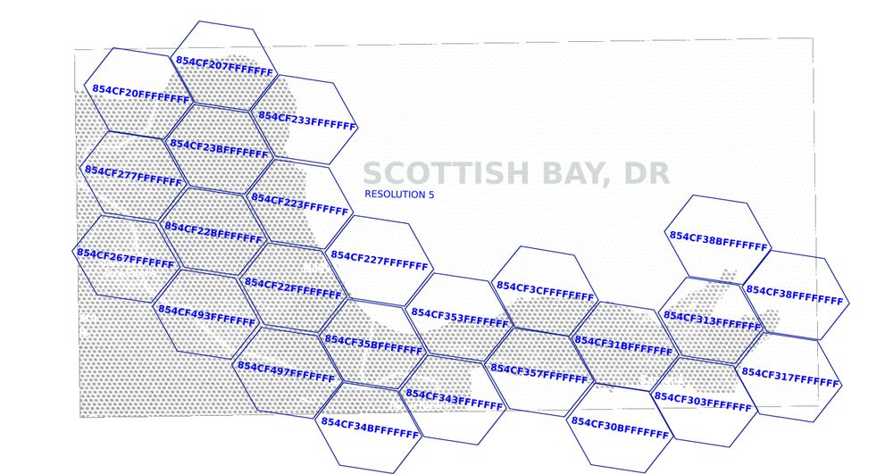

Bloculous
A little place for every hexagon: the Bloculus protocol and the domes it links.
Source: DATRO Consortium, Bloculus – Business Case, Communications Protocol, version 0.0.0, dated 24 July 2021, from the DATRO document library. The text on this page is taken from that paper and adds nothing to it; the photographs show the domes themselves.
1The domes
The paper describes a fixed communications network made of geodesic communications equipment rooms, which it calls “Neo Domes”. They are solar powered and mesh together over licence-free radio frequencies. The network was being beta tested along a 70 km stretch of Caribbean coastline the paper names the “Scottish Bay”.
The paper also records that the whole network, from the equipment rooms’ blueprints to the software that runs them and the end users’ wireless access points, is in the public domain under a General Public Licence, so anyone can launch the same network in their own area.
2The name
3What the protocol has to do
- Let each new dome quickly, securely and on its own find and pair with neighbouring domes over licence-free radio.
- Once the radio links are up, let the web nodes inside each dome pair with their matching nodes in neighbouring domes.
- Keep addresses short enough to work over low-bandwidth fallback links such as LoRaWAN or cellular USSD.
- Use the same scheme to route and re-route traffic across the network, for example for uptime monitoring.
4One hexagon, one domain
Bloculus combines a hexagonal grid reference system, H3 (“honeycombs”), with Handshake, a platform for top-level domains. Each hexagon’s unique 15-character reference becomes its own top-level domain. A dome knows its place from its address, so it can link to its neighbours without being told.
Tap a hexagon to place a dome. It links to the six hexagons around it. (Illustration.)
Hexagon sizes (H3 resolutions in the paper)
The paper picks resolution 8: hexagons about 461 m long, a balance between location accuracy and obscurity.


5Reading an address
The hexagon is the top-level domain, the kind of service is the domain name, and the service itself is the subdomain. The paper’s own example:
Green: the hexagon’s H3 reference as a top-level domain (the paper’s example cell). The domains work on the local network first, and on the wider internet once a gateway joins.
6Setting up a dome
The paper names HotspotBnB as the interface for the last stage of setting up a dome: a simple local web app with a built-in app store for one-click installs, running on a low-energy single-board computer such as a Raspberry Pi. Its operating system builds and configures itself, even without an internet connection, using another DATRO tool called Cacher.
When a dome’s hexagon (resolution 8) is chosen before the system is built, its top-level domain is baked in. On first boot the equipment room can identify itself and pair with the rooms near it.
7Open issue in the paper
Security (version 0.0.0): having the dome’s hexagon reference in HotspotBnB before it builds itself is useful, but the solution must keep bad actors out.
The paper recommends a dedicated whitepaper on the technology as the next step.